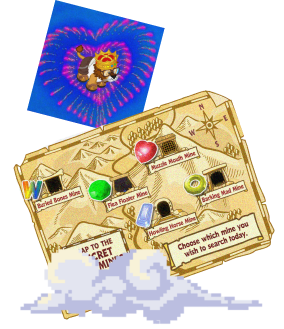

INDEX
THE CURIO SHOP
Arte Fact owns the Curio Shop, where he sells novelties, artifacts, and antiquities to Webkinz. After retiring from archaeology, Arte assumed the role of managing the shop, using it as a storage space for the artifacts he uncovered in his adventures. In Webkinz World, the Curio Shop is the destination for players seeking rare and exclusive items, also referred to as CSO items or Arte's Favorites. Additionally, it serves as the hub for gem hunting, a pursuit that can lead to the assembly of the legendary Crown of Wonder.

GEMSTONES
In Webkinz World , gems refer to gemstones discovered in the Gem Mines accessible through the Curio Shop. Each gem possesses different values and rarity levels. Some are costly, either due to their rarity or being designated as the Gem of the Day, whereas others are more affordable, often found commonly. Upon collecting all 30 gems, you have the option to exchange them with Arte Fact, the Curio Shop owner, in return for the coveted Webkinz Crown of Wonder.
The Webkinz Crown of Wonder is a clothing item that is obtained by finding all 30 gemstones. When you find them all, you click on the crown and trade all 30 gems and Arte Fact gives the crown to you. You can sell the crown for 2,250 KinzCash.
The Webkinz Crown of Wonder is a clothing item that is obtained by finding all 30 gemstones. When you find them all, you click on the crown and trade all 30 gems and Arte Fact gives the crown to you. You can sell the crown for 2,250 KinzCash.
GEM HUNT
The Gem Hunt is a daily task allowing players to mine gems at the Gem Mines, managed and owned by Arte Fact. To access the mines, select the "Gem Hunt" option at the Curio Shop, click the map, and review collected gems in the Gem Collection box. Upon gathering all 30 gems, you can exchange them for the Webkinz Crown of Wonder. You have 3 tries to find a gem. If you find “Slag” it just means that you didn't find a gem. If you get Slag three times in a row then you get no daily gems.
MINES
There are five distinct mines available for scavenging, each containing a unique set of gems. These gems are categorized into three rarities: common, uncommon, and rare. Each rare gem is exclusive to a specific mine, corresponding to the mine's interior color. Steve Webkinz's article delves into this information,[1] but a summarized version is provided below.
Upon discovering a gem, or slag, you have the option to either keep it in your Gem Collection or sell it to Arte. The purchase price from Arte is contingent on the quantity he has acquired that day, the gem's rarity, or whether it's the Gem of the Day. Another option is to locate Doug the Dog in the Collector's Room within the Clubhouse, where you can exchange the gems you've retained for unique items. A helpful tool is that below the gem you found the game will tell you how many of those gems you have in your collection to help you decide whether or not to keep the gem.
See below all the info about every Webkinz gem. Just click on the gem you want to know about!
☆Buried Bones Mine

- All white gems (including the Webkinz Diamond)
- Uncommon/common yelow gems
- Common blue gems
- All green gems (including the Earth Emerals)
- Uncommon/common red gems
- Common white gems
- All blue gems (including the Ocean Sapphire)
- Uncommon/common green gems
- Common red gems
- All red gems (including the Red Ruby Heart)
- Uncommon/common white gems
- Common yellow gems
- All yellow gems (including the Corona Topaz)
- Uncommon/common blue gems
- Common green gems
See below all the info about every Webkinz gem. Just click on the gem you want to know about!